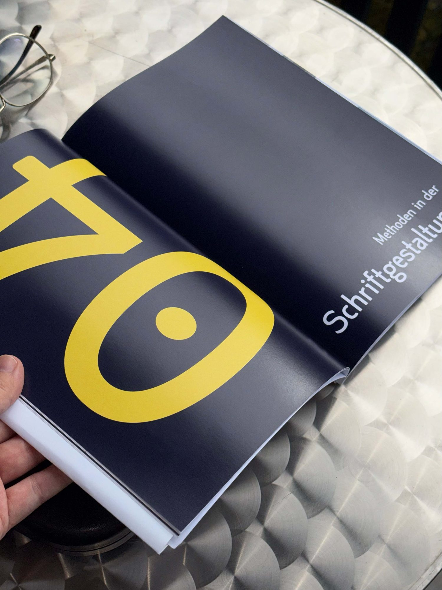
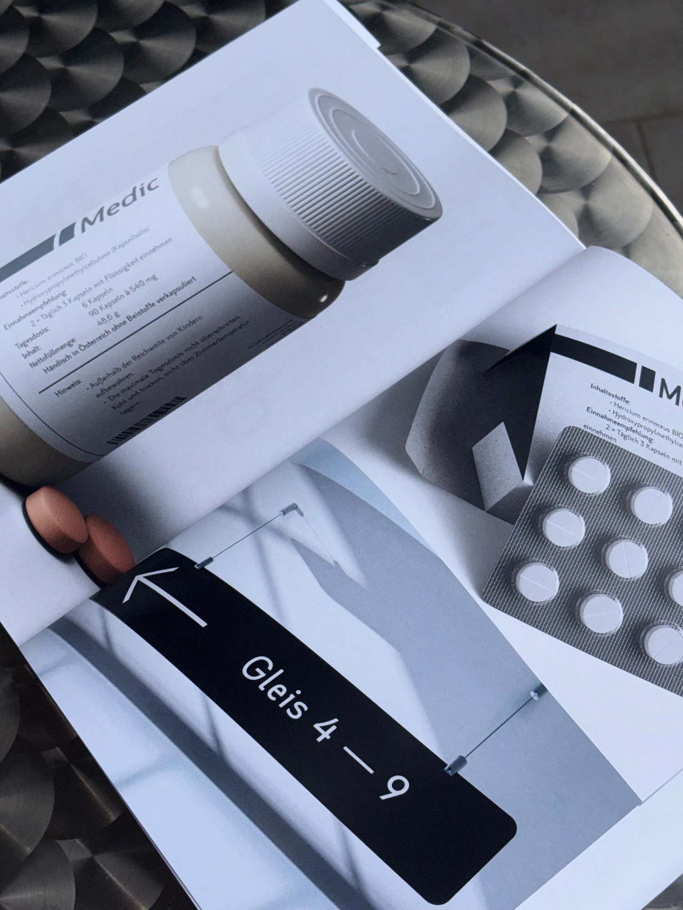
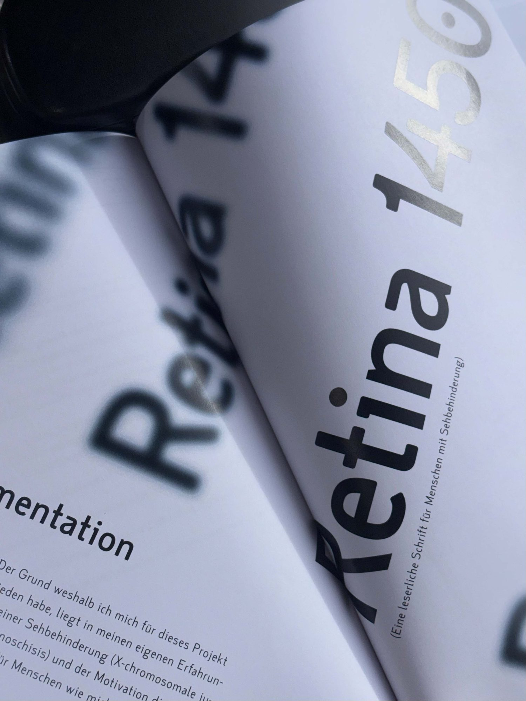
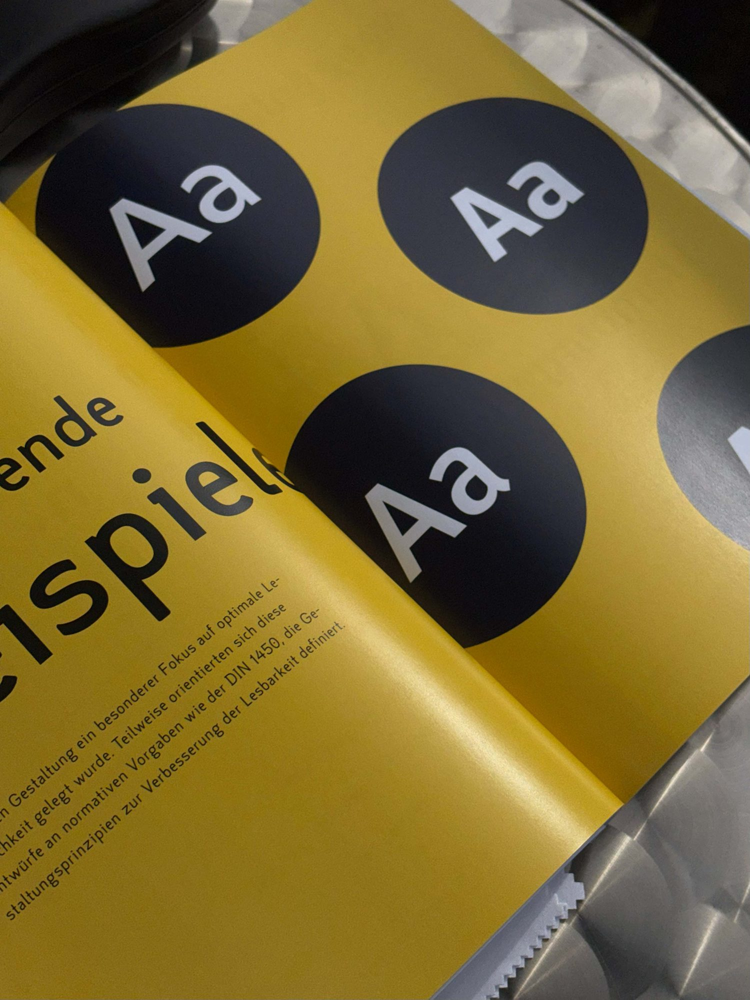
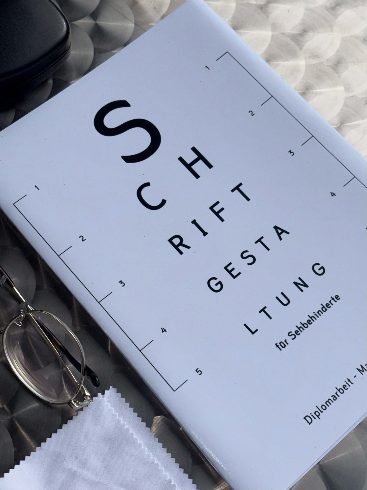
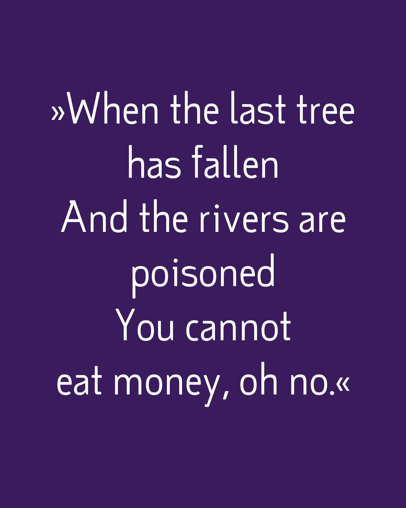
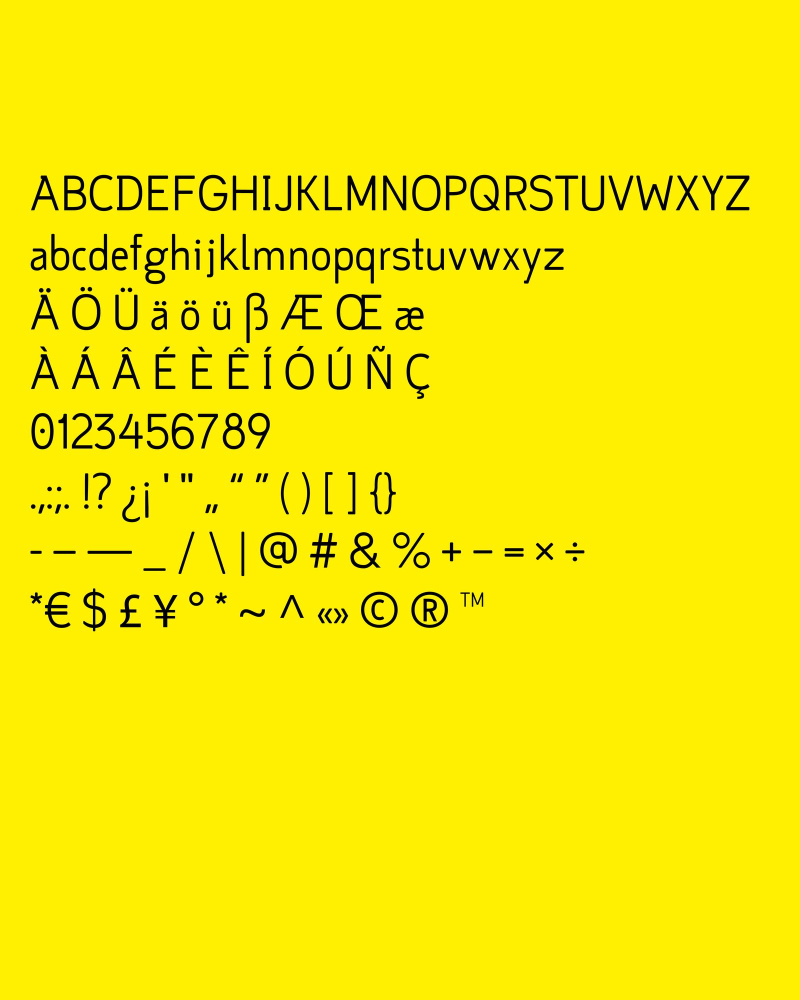

Typedesign for Visually Impaired
My diploma thesis deals with accessibility. Because I live with X-linked retinoschisis myself, I designed a typeface for readers with visual impairments.








